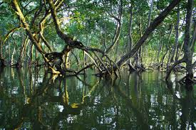

Victoria Memorial, Kolkata
A grand white marble monument dedicated to Queen Victoria, showcasing colonial architecture and housing a museum of Bengal’s history.

Howrah Bridge, Kolkata
An iconic cantilever bridge over the Hooghly River, symbolizing Kolkata’s vibrancy and engineering marvels.

Darjeeling
Famous for its tea gardens, Himalayan views, and the historic Darjeeling Himalayan Railway, a UNESCO World Heritage Site.

Sundarbans
The largest mangrove forest in the world, home to the Royal Bengal Tiger and a UNESCO World Heritage Site.

Durga Puja
The most celebrated festival of West Bengal, marked by elaborate pandals, cultural performances, and traditional Bengali cuisine.
Bengali Cuisine
Known for its sweets like Rasgulla and Sandesh, fish delicacies, and flavorful rice-based dishes reflecting the culinary heritage of Bengal.